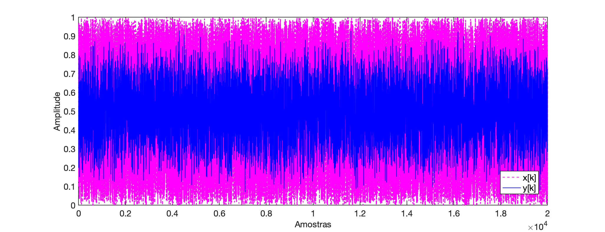

Filtro Butterworth
Idéia: Usar o método de Tustin (e Matlab) para filtar certo sinal usando filtro do tipo Butterworth.
Implementação de filtros usando Matlab/Octave
O Matlab/Octave fornece funções integradas para projetar quatro tipos básicos de filtros, conforme mostrado na figura abaixo:

- Passa-Baixas (Lowpass): permite a passagem de baixas freqüências; rejeita altas frequências.
- Passa-Altas (Highpass): permite frequências altas; rejeita baixas frequências.
- Passa-Banda (Bandpass): permite uma certa faixa de frequências e rejeita frequências fora desse intervalo
- Rejeita-Faixa: (Bandstop): rejeita uma determinada faixa de frequências e permite frequências fora dessa faixa para passar.
A função de projeto de filtro mais simples de usar é a função butter(), em homenagem ao engenheiro britânico Stephen Butterworth (1885–1958).
Conforme mostrado no código abaixo, a função manteiga recebe três parâmetros de entrada (o tipo de filtro, a ordem e a frequência de corte – explicado mais adiante) e retorna os coeficientes e que descrevem o sistema discreto, que podem então ser usados para filtrar um sinal.
Exemplo:
xxxxxxxxxx>> [b a] = butter(1, 0.2,'low');Os três parâmetros de entrada da função (ordem (valor = 1), frequência de corte (valor = 0,2) e tipo (valor = 'low')) são explicados posteriormente, mas vale a pena notar que uma única linha de código é tudo que você precisa para projetar um filtro.
A linha anterior gerou a seguinte função transferência:
xxxxxxxxxx>> H=tf(b, a, 1)H = 0.2452 z + 0.2452 ----------------- z - 0.5095 Sample time: 1 secondsDiscrete-time transfer function.>> zpk(H) 0.24524 (z+1) ------------- (z-0.5095) Sample time: 1 secondsDiscrete-time zero/pole/gain model.Cujo gráfico de resposta espectral pode ser visto adiante:
xxxxxxxxxx>> figure; freqz(b,a,[],1)
A linha de código a seguir mostra um exemplo de filtragem de um sinal, onde a entrada do filtro é uma sequência de números aleatórios criados usando a função rand integrada.
xxxxxxxxxx>> x = rand(1,20000);>> y = filter(b,a,x);A primeira linha criará a variável que contém 20.000 números aleatórios com um valor entre 0 e 1. A segunda linha usa a função filter() para filtrar o sinal usando os coeficientes e retornados pela função butter() usada antes.
xxxxxxxxxx>> k=0:length(x)-1;>> figure; plot(k,x,'m--', k,y,'b-')>> legend('x[k]','y[k]')>> xlabel("Amostras")>> ylabel('Amplitude')
Pode ser interessante ouvir a entrada e a saída. Se você usar o código abaixo, ouvirá que as altas frequências foram removidas.
xxxxxxxxxx>> sound(x, 10000) % fs = 10 KHz.>> pause(2.5)>> sound(y, 10000)Deve ter sido gerado algo como: @ 10 KHz: ;
Sinal fittrado, @ 10 KHz: ;
Resumidamente os três parâmetros servem para:
- O primeiro parâmetro, a ordem do filtro, controla a inclinação (taxa de roll-off) da curva de resposta de frequência. Uma ordem mais alta resulta em uma curva mais íngreme e requer mais cálculos para sua implementação;
- O segundo parâmetro, a frequência de corte, controla onde a resposta de frequência começa a curvar. O valor está entre 0 e 1, sendo 1 correspondente à frequência de Nyquist.
- O terceiro parâmetro especifica o tipo de filtro, ou seja, ‘low’ → passa baixa; ‘high’ → passa alta; ‘stop’ → rejeita-faixa; ‘bandpass’ → passa banda. Ao projetar um filtro rejeita faixa (stop band) ou passa-banda, duas frequências de corte devem ser especificadas, por exemplo:
[b a] = butter(1, [0,25 0,6],'stop');
Teste: Experimente executar o seguinte código sobre o vetor calculado anteriormente:
x
>> [b2 a2] = butter(5, 0.05,'low');>> 250/(10E3/2)ans = 0.05>> y2=filter(b2,a2,x);>> sound(y2, 10E3)O som gerado deve ser semelhante à: @ 10 KHz: Sinal fittrado, @ 10 KHz: ;
Curiosidades
A título de curiosidade, a voz masculina oscila nas frequências entre 250 à 700 Hz e a voz feminina, de 550 à 1000 Hz.
Uma bateria é composta de:
Onde: \1. Prato de condução (Ride) \2. Surdo \3. Tom 1 e Tom 2 \4. Bumbo \5. Caixa \6. Chimbal (Hit-hat) \7. Prato de Ataque (Crash)
Em especial:
Bumbo:
- Graves: 50Hz-100Hz – Ótimo para adicionar energia, mas em excesso pode soar estrondoso
- Médio-graves: 100Hz-250Hz – Ótimo para adicionar gordura, mas em excesso pode deixar o som turvo
- Médios: 400Hz-800Hz – em excesso pode soar encaixotado
- Médio-agudos: 3kHz-5kHz – Ótimo para adicionar batida e ataque; em excesso pode causar aspereza
Caixa
- Médio-graves: 100Hz-250Hz – Ótimo para adicionar gordura, mas em excesso pode deixar o som turvo
- Médios: 400Hz-1kHz – Em geral é onde o som da fundamental pode ser encontrado; em excesso pode soar encaixotado
- Médio-agudos: 3kHz-5kHz – Ótimo para adicionar ataque; em excesso pode causar aspereza
- Agudos: 10kHz – Ótimo para adicionar “ar” e “buzz”, em excesso pode ser estridente
Tom-tons
- Graves: 65 Hz-100Hz – Ótimo para adicionar energia ao surdo, mas em excesso pode soar estrondoso
- Médio-graves: 100Hz-200Hz – Ótimo para adicionar energia aos tom-tons, mas em excesso pode deixar o som turvo
- Médios: 400Hz-800Hz – Em excesso pode soar encaixotado
- Médio-agudos: 5kHz-7kHz – Ótimo para adicionar ataque; em excesso pode causar aspereza
Pratos/Overheads
- Médio-graves: 200Hz-500Hz – Ótimo para adicionar “corpo” aos pratos, mas em excesso pode soar turvo ou encaixotado
- Médio-agudos: 3kHz-5kHz – Ótimo para adicionar presença, mas em excesso pode soar duro e brigar com o vocal
- Agudos: 7kHz-12kHz – Ótimo para adicionar “ar”; em excesso pode ser estridente
Ref.: 11 Passos para mixar bateria como um profissional (acessado em 17/06/2024).
Outras classificações para faixas de aúdio:
Categoria Faixa Frequencial Infrasom < 20 Hz Subgraves 20 Hz ~ 60 Hz Graves 60 Hz ~ 100 Hz Médio-graves 101 Hz ~ 200 Hz Médios 201 Hz ~ 3 KHz Agudos 3 KHz ~ 20 KHz Ultrassom > 20 KHz

Ordem do filtro
Exemplo: Vamos aplicar um filtro Butterworth de 5a-ordem com sobre o sinal xx.